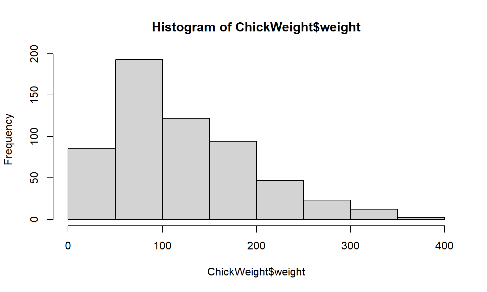
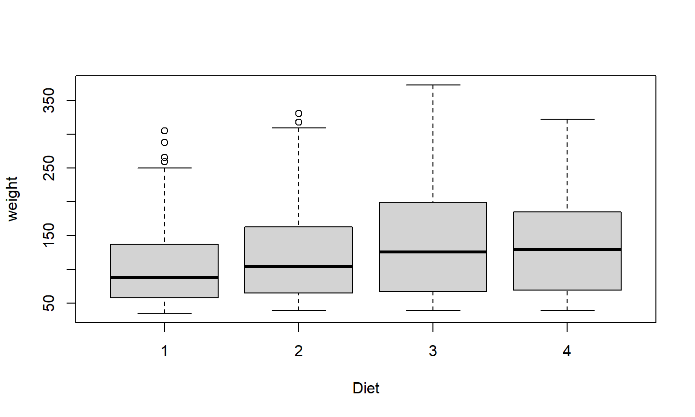
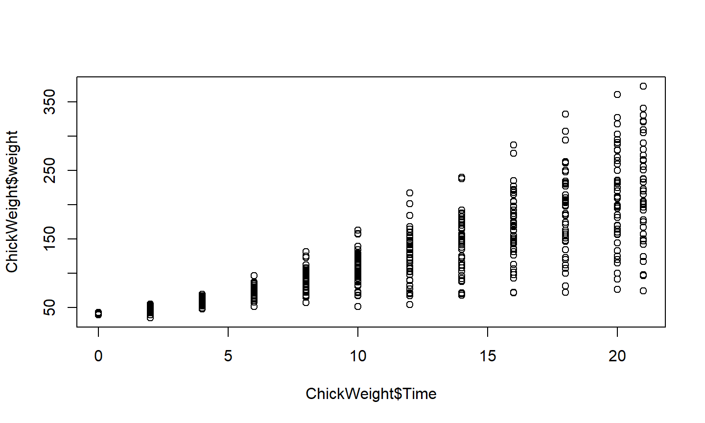
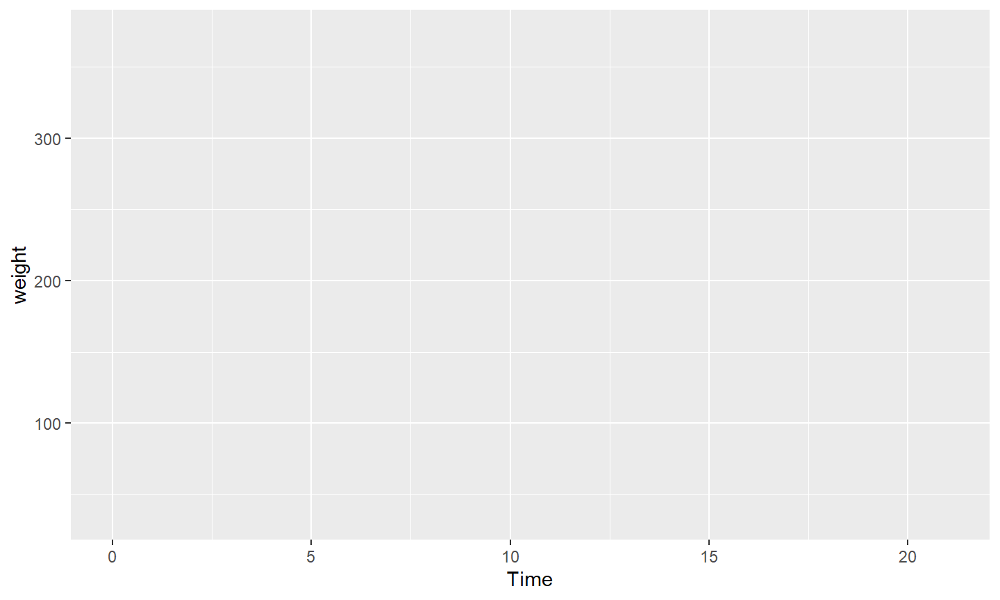
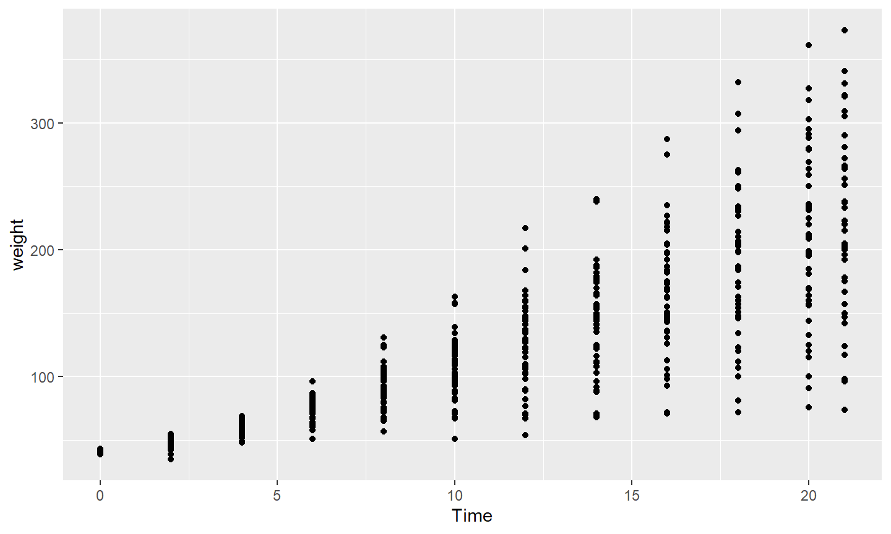
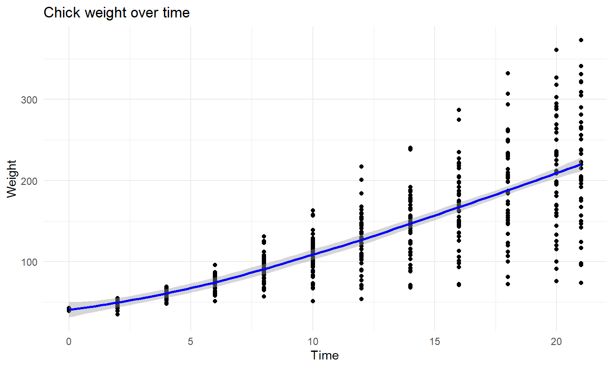
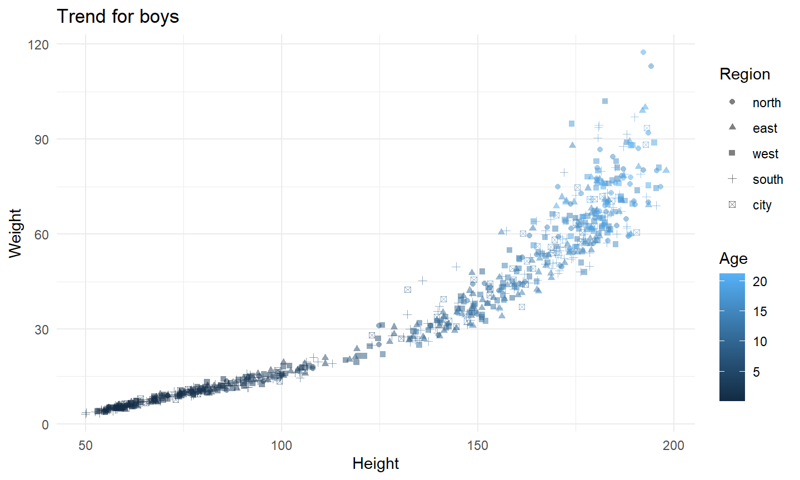
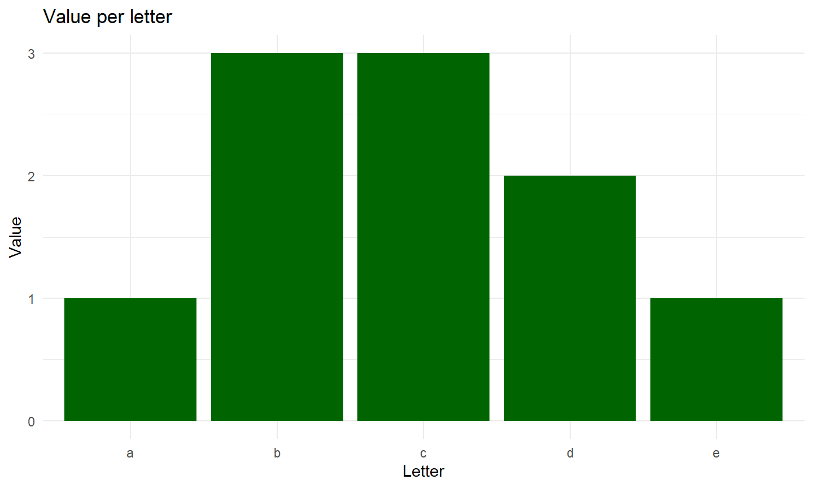
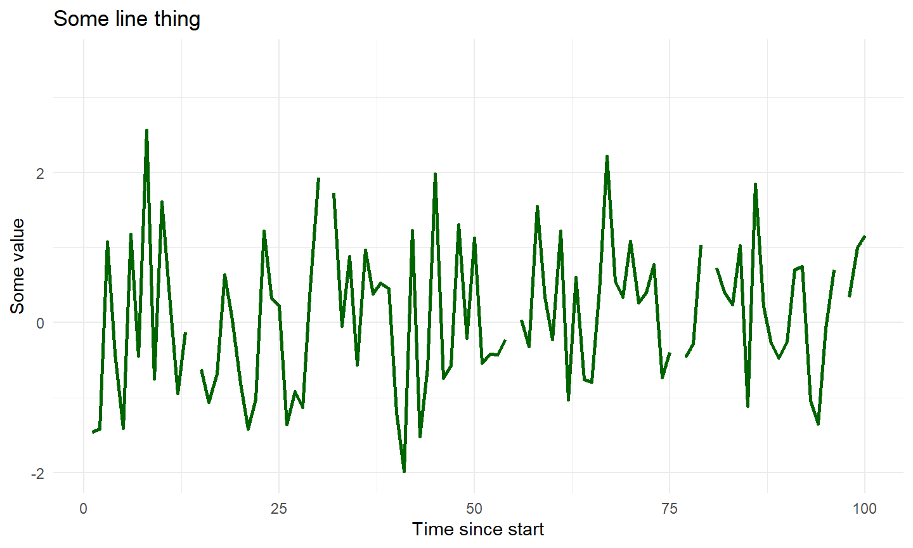
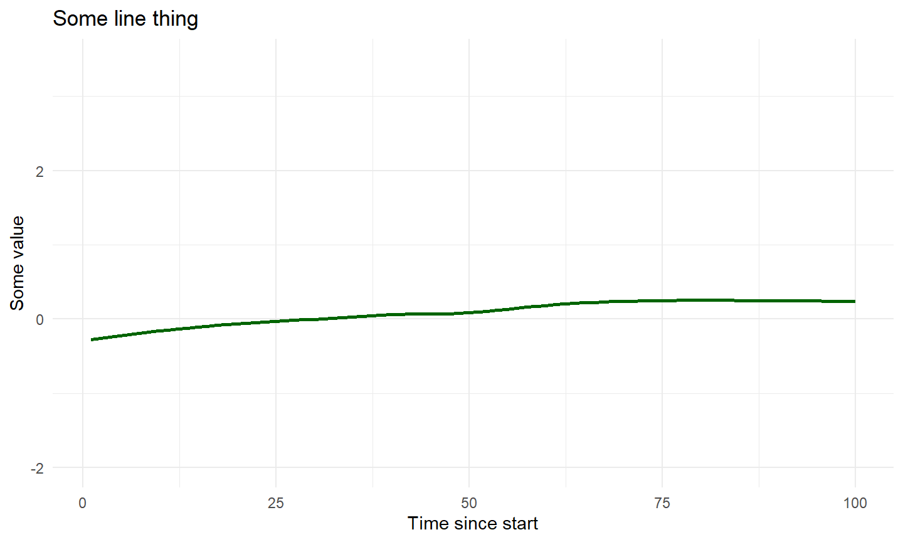

Recap of Last Week
Recap Lecture 3
- What is data wrangling?
- Tidyverse package + pipe operator
- Tidying data
- Renaming, dates and times, pivot longer and wider
- Data manipulation
- Head, tail
- Filter, select, arrange
- Grouping, summarizing, mutating
Outline of Lecture 4
Outline of Lecture 4
- How to tell a story with data
- 5 steps of data analysis
- Introduction into visualization
- Visualization in R
- Base R graphs
ggplot2
Steps of Data Analysis

Story Telling with Data
5 Steps of Data Analysis
- Ask
- Collect and understand
- Clean
- Analyze
- Tell your story
1. Ask
- What is the question your research will answer?
- Why is your data interesting?
- What do you think will be interesting things to show?
- Hypothesize: what story do I expect my data will tell
- What tables/figures do I think might be interesting to create? (without having looked at the data)
2. Collect and understand
- Collect the data
- Understand how the data is generated (very precisely)
- Understand what all the variables really mean
- Ask questions to yourself to check whether you fully understand every aspect of your data
- Visualize your data to get a feeling of what stories the data might tell
3. Clean
- Import the data into the program you will use for analyzing -
R - Perform checks on the data (missing values, outliers, summary statistics)
- Question the outcome of all your checks, does any cleaning need to be done?
- Clean the data based on the careful analysis you did
- Make sure the data is in the correct format for you to analyze
4. Analyze
- Step away from your data and write a list of tables you want to create - Practical
- Step away from your data and draw rough sketches of the figures you want to create - Practical
- Do the first step data analysis: create simple summary statistics, as well as the first and easiest tables and figures - Practical
- Identify patterns and re-think which story you think the data tells, change / add to your list of tables and figures
- Do the next step of data analysis: play around with your data and create additional tables/figures based on the story that your data seems to tell, make sure to also play around with different ways of visualization
5. Tell your story
- Finalize your data analysis: create the final tables and visualizations that tell the story in the best way
- Choose which tables and figures to include and in which order
- Critically assess the way that you have presented your data: is it all correct, is it easy to understand, is there a story to be told?
- Draw conclusions, the story to be told is first of all what can be seen from the data and secondly what the following policy recommendations are
- Present the data in your report and make sure you are easily able to explain the main findings in 1 minute
Application of the 5 Steps of Data Analysis
Applying the 5 Steps
- Can you apply these 5 steps to your own project?
- Ask
- Collect and understand
- Clean
- Analyze
- Tell your story
- Which steps have you taken?
- Which steps have you not yet taken?
- What have you learnt from these 5 steps?
Introduction into Visualization
Introduction into visualization
- Importance of vizualization
- In which steps do you use visualizations?
- Exploratory graphs
- Illustrative graphs
- What type of graphs are you going to make?
- What type of graphs will be in your report/presentation?
Why Visualize?

Source: https://www.autodeskresearch.com/publications/samestats
Exploratory graphs
- Understanding your data
- Describing data
- Detect patterns
- Validation checks on data
- Use for yourself / internally
Illustrative graphs
- Illustrating a conclusion
- Telling a story with the data
- For publication / to share
- Require more effort!
- Axis titles
- Labels
- Colors
- etc.
Visualization in R
Graphical Systems in R
- Standard graphics package - in
base R ggplot2package
Base R
- Not going to use this much
- Very basic package for visualizations
- Often easier + more convenient to use
ggplot2!
Histogram in base R
hist(ChickWeight$weight)

Boxplot in base R
boxplot(weight ~ Diet, data = ChickWeight)

Scatterplot in base R
plot(x = ChickWeight$Time, y = ChickWeight$weight)

Different Types of Charts
- Many different types of graphs
- Important to choose the most suitable type
- Try different types to see what works for your data
Ggplot2
Introduction to ggplot2
Layered plotting based on the book The Grammar of Graphics by Leland Wilkinsons.
With ggplot2 you
- provide the data
- define how to map variables to aesthetics
- state which geometric object to display
- (optional) edit the overall theme of the plot
ggplot2 then takes care of the details
ggplot
ggplot()
Data
ggplot(ChickWeight)

Aesthetics
ggplot(ChickWeight, aes(x = Time, y = weight))

Geometric object
ggplot(ChickWeight, aes(x = Time, y = weight)) + geom_point()

General Rules for ggplot
ggplot(data = DATA, mapping = aes(MAPPINGS)) + GEOM_FUNCTION()
Add layers with +
Put + at the end of a line
Map aesthetics with aes()
Additional Layers
extra_layer <- ggplot(ChickWeight,
aes(x = Time,
y = weight)) +
geom_point() +
geom_smooth(color = "blue") +
labs(x = "Time", y = "Weight", title = "Chick weight over time") +
theme_minimal()
Additional Layers
plot(extra_layer)

More advanced plots
more_advanced_plot <- ggplot(ChickWeight,
aes(x = Time,
y = weight,
color = Diet)) +
geom_point(alpha = 0.5) +
labs(x = "Time", y = "Weight",
color = "Diet", title = "Chick weight over time by diet") +
theme_minimal()
There are many different types of plot you could make! Can you think of more?
More advanced plots
plot(more_advanced_plot)
Aesthetics
- x
- y
- size
- colour
- fill
- opacity (alpha)
- linetype
- …
New dataset: boys
library(mice) # Boys dataset glimpse(boys)
## Rows: 748 ## Columns: 9 ## $ age <dbl> 0.035, 0.038, 0.057, 0.060, 0.062, 0.068, 0.068, 0.071, 0.071, 0.0… ## $ hgt <dbl> 50.1, 53.5, 50.0, 54.5, 57.5, 55.5, 52.5, 53.0, 55.1, 54.5, 58.5, … ## $ wgt <dbl> 3.650, 3.370, 3.140, 4.270, 5.030, 4.655, 3.810, 3.890, 3.880, 4.2… ## $ bmi <dbl> 14.54, 11.77, 12.56, 14.37, 15.21, 15.11, 13.82, 13.84, 12.77, 14.… ## $ hc <dbl> 33.7, 35.0, 35.2, 36.7, 37.3, 37.0, 34.9, 35.8, 36.8, 38.0, 40.5, … ## $ gen <ord> NA, NA, NA, NA, NA, NA, NA, NA, NA, NA, NA, NA, NA, NA, NA, NA, NA… ## $ phb <ord> NA, NA, NA, NA, NA, NA, NA, NA, NA, NA, NA, NA, NA, NA, NA, NA, NA… ## $ tv <int> NA, NA, NA, NA, NA, NA, NA, NA, NA, NA, NA, NA, NA, NA, NA, NA, NA… ## $ reg <fct> south, south, south, south, south, south, south, west, west, east,…
New dataset: boys
summary(boys)
## age hgt wgt bmi ## Min. : 0.035 Min. : 50.00 Min. : 3.14 Min. :11.77 ## 1st Qu.: 1.581 1st Qu.: 84.88 1st Qu.: 11.70 1st Qu.:15.90 ## Median :10.505 Median :147.30 Median : 34.65 Median :17.45 ## Mean : 9.159 Mean :132.15 Mean : 37.15 Mean :18.07 ## 3rd Qu.:15.267 3rd Qu.:175.22 3rd Qu.: 59.58 3rd Qu.:19.53 ## Max. :21.177 Max. :198.00 Max. :117.40 Max. :31.74 ## NA's :20 NA's :4 NA's :21 ## hc gen phb tv reg ## Min. :33.70 G1 : 56 P1 : 63 Min. : 1.00 north: 81 ## 1st Qu.:48.12 G2 : 50 P2 : 40 1st Qu.: 4.00 east :161 ## Median :53.00 G3 : 22 P3 : 19 Median :12.00 west :239 ## Mean :51.51 G4 : 42 P4 : 32 Mean :11.89 south:191 ## 3rd Qu.:56.00 G5 : 75 P5 : 50 3rd Qu.:20.00 city : 73 ## Max. :65.00 NA's:503 P6 : 41 Max. :25.00 NA's : 3 ## NA's :46 NA's:503 NA's :522
New dataset: boys
head(boys, 3)
## age hgt wgt bmi hc gen phb tv reg ## 3 0.035 50.1 3.65 14.54 33.7 <NA> <NA> NA south ## 4 0.038 53.5 3.37 11.77 35.0 <NA> <NA> NA south ## 18 0.057 50.0 3.14 12.56 35.2 <NA> <NA> NA south
tail(boys, 3)
## age hgt wgt bmi hc gen phb tv reg ## 7447 20.780 193.5 75.4 20.13 NA <NA> <NA> NA west ## 7451 20.813 189.0 78.0 21.83 59.9 <NA> <NA> NA north ## 7475 21.177 181.8 76.5 23.14 NA <NA> <NA> NA east
Aesthetics
gg <-
boys %>%
filter(!is.na(reg)) %>%
ggplot(aes(x = hgt,
y = wgt,
shape = reg,
colour = age)) +
geom_point( alpha = 0.5) +
labs(title = "Trend for boys",
x = "Height",
y = "Weight",
shape = "Region",
colour = "Age") +
theme_minimal()
Aesthetics
plot(gg)

Geoms
- geom_point
- geom_bar
- geom_line
- geom_smooth
- geom_histogram
- geom_boxplot
- geom_density
Geoms: Bar

Geoms: Line

Geoms: Smooth

Geoms: Boxplot
Facets
facet_wrap() and facet_grid() divide figures into panels.
boys %>% ggplot(aes(x = age, y = bmi)) + geom_point() + geom_smooth() + facet_wrap(~ reg)
Facets
Export Figures
Easy with ggsave()
# save as pdf
ggssave("plot.pdf", myplot)
# save as png and specify dimensions
ggssave("plot.png", myplot, width = 7, height = 5, units="in")
Helpful link in RStudio

Additional Resources
- R for Data Science
- DataCamp: ggplot 2 courses
- ggplot2: Elegant Graphics for Data Analysis (the official ggplot2 book)
Data Visualization Principles
- Simplify and focus
- Increase your text size
- Avoid pie charts, use bar charts
- Avoid line drawings, use fill/color
- Stay 2D